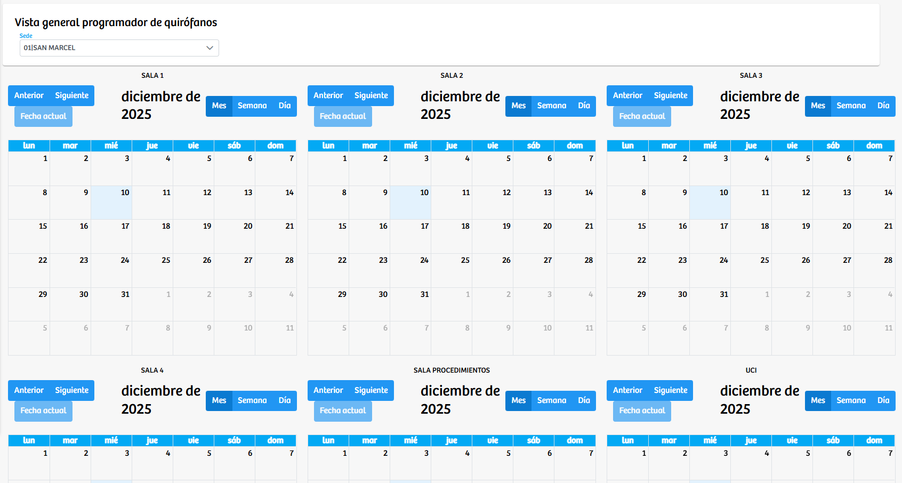
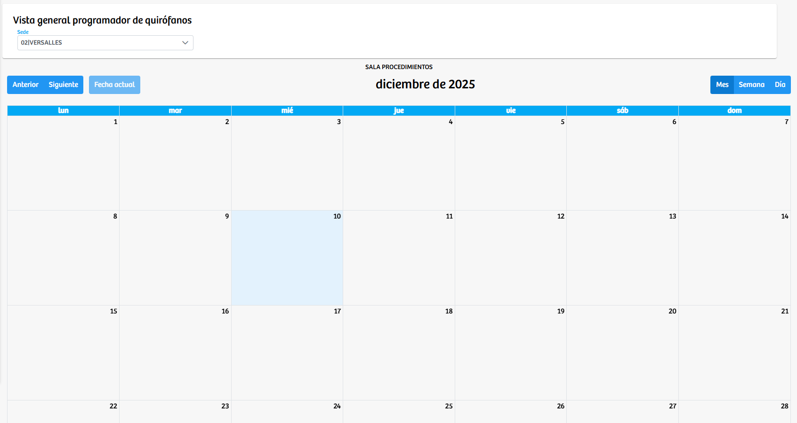

Modulos Sas-Web
Funcionalidades
Visualización Agenda QX
El módulo Visualización Agenda QX permite consultar de manera global y organizada las agendas quirúrgicas previamente programadas en las diferentes salas o consultorios de la institución. Su objetivo es ofrecer una vista rápida, clara y simultánea de la disponibilidad y programación de los quirófanos, facilitando la planeación operativa del servicio de cirugía.
En la parte superior se encuentra un selector de Sede, a partir del cual el sistema carga automáticamente las agendas correspondientes a esa ubicación. Una vez seleccionada la sede, se despliegan las distintas salas disponibles, cada una con su propio calendario. Estas agendas se presentan en formato mensual por defecto, aunque también pueden visualizarse en vista semanal o diaria mediante los botones disponibles en cada calendario.
Cada sala o consultorio muestra un calendario independiente, donde se reflejan los eventos ya programados. La navegación entre meses se realiza mediante los botones Anterior, Siguiente y Fecha actual, permitiendo desplazarse fácilmente por las agendas sin perder contexto. En sedes con una sola sala, la vista se simplifica mostrando únicamente el calendario correspondiente.